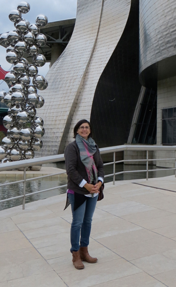

Founder and principal of NK Designs LLC, Nancy Smith began working as an interior designer in 2009. She has a strong artistic background in original painting, sketching, and graphic design, which enables her to create and articulate unique and beautiful spaces for her clients.
Nancy's love for architecture, home design, art and travel, as well as her background in Graphic Design led her to pursue advanced coursework in Interior Architecure and Design at the Academy of Art University in San Francisco. Her eye for detail and prowess as an artist allows her to design gorgeous spaces with cost-conscious sensibilities. According to Nancy, "Interior design is all about creating living spaces, whether a whole house or just a humble linen closet, that my client loves.”